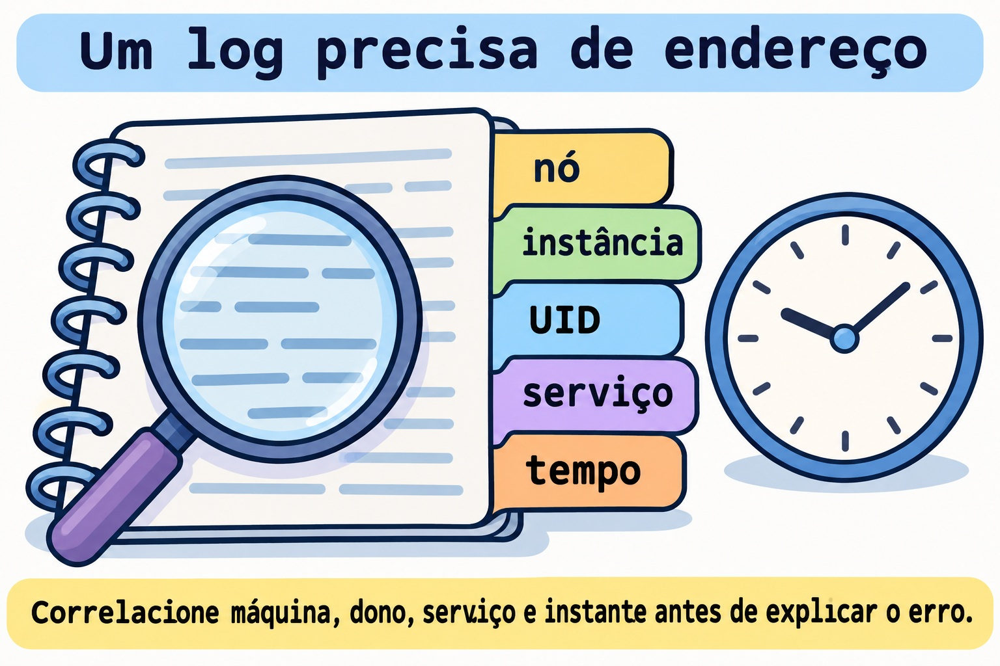

Aula 20.3 · Um módulo por dentro
O coração desta aula: encontrar dono, serviço, contêiner, dados e logs da mesma instância.
| Ficha | Plano de trabalho |
|---|---|
| Módulo | M20 · NethServer 8 por dentro, aula 3 de 7 |
| Quando | Semana 28 |
| Ao final | encontrar dono, serviço, contêiner, dados e logs da mesma instância. |
| Pré-requisitos | 20.1–20.2; DokuWiki configurado; registro do operador; navegador autorizado |
| Duração | 100–120 minutos |
| Snapshot | VM 240: m20a3-inicio e m20a3-fim |
A VM 240, ns8-1, roda Rocky Linux 9 e NS8. A gestão tem endereço real reservado; a segunda placa tem 192.0.2.240/24 em vmbr17, sem gateway. Internet sai somente pela gestão.
Confira o guia da bancada, os nomes e as rotas antes de começar. O DNS M19 em 192.0.2.204 atende a rede isolada; não configure o loopback como DNS do nó.
Os comandos administrativos desta aula rodam em um shell root da VM indicada, obtido com sudo -i. O usuário root do nó não é automaticamente o dono dos contêineres da aplicação.
O nome de instância é descoberto na instalação real. Nunca substitua uma variável por um nome de exemplo só porque ele parece familiar. Não publique o arquivo de ambiente interno de um agente.
1 · Aquecimento
- O root do nó vê automaticamente os contêineres de todo usuário?
- Uma instância pode reunir vários contêineres?
- O nome mostrado no painel basta para escolher uma unidade systemd?
2 · Por que importa
Um painel pode mostrar a mesma aplicação em mais de uma instância. Investigar a primeira conta Unix parecida transfere a hipótese para o objeto errado.
O NS8 coordena ações; cada módulo tem seu ambiente. A pergunta útil não é apenas se existe um processo, mas a qual instância e dono ele pertence.
Ponte Windows
Uma conta de serviço e um aplicativo visível no console administrativo não são a mesma coisa. O contexto define credenciais, arquivos e inventário de execução.
3 · Modelo mental

A unidade administrativa é a instância. O agente recebe ações; o usuário Unix define privilégios e armazenamento; o runtime mantém os contêineres.
Rootless não significa que nenhum processo da aplicação use UID zero dentro do contêiner. Significa que o processo do host não recebe os privilégios do root do nó.
Em versões atuais, contas rootless podem usar shell de login nologin. Isso é uma proteção; runagent fornece o contexto suportado sem transformar a conta em login humano.
4 · O essencial
| Pergunta | Evidência |
|---|---|
| Qual instância? | Painel, ID e UUID reais |
| Em qual nó? | Inventário e hostname |
| Com qual dono? | runagent seguido de id |
| Qual serviço? | Inventário systemd no contexto |
| Onde os dados persistem? | Mounts e volumes inspecionados |
Rocky × Debian
O NS8 desta bancada usa Rocky 9; o Debian 202 é cliente. Não copie o diretório de um módulo para outro sistema e espere manter sua identidade ou integração.
Decida 1
O painel lista o wiki, mas o Podman do root não o mostra. Qual é o próximo teste?
A. Reinstalar o módulo. B. Entrar no contexto da instância correta. C. Apagar o armazenamento de root.
5 · Lab guiado
Passo 1 · Reconciliar a identidade
Palpite: O ID salvo ainda é a instância que o painel está mostrando?
test "$(id -u)" -eq 0 || exit 1
test "$(hostname -s)" = ns8-1 || exit 1
test -f /root/m20-lab/operador.env || exit 1
test ! -L /root/m20-lab/operador.env || exit 1
test "$(stat -c '%u:%g:%a' /root/m20-lab/operador.env)" = 0:0:600 || exit 1
cat /root/m20-lab/operador.env
. /root/m20-lab/operador.env
test "$NS8_IP" = 192.0.2.240 || exit 1
test "$WIKI_FQDN" = wiki.lab.test || exit 1
case "$MODULE_ID" in dokuwiki[0-9]*) ;; *) exit 1 ;; esac
runagent -l
runagent -l | grep -Fx -- "$MODULE_ID" || exit 1No painel, abra os detalhes do DokuWiki e compare instância, UUID e nó com o registro. A descrição editável serve para leitura humana; não substitui esses identificadores.
install -d -m 0700 /root/m20-lab
EVID=$(mktemp -d /root/m20-lab/evidence-20-3.XXXXXX) || exit 1
date --iso-8601=seconds > "$EVID/time-before.txt"
hostnamectl hostname > "$EVID/hostname.txt"
runagent -l > "$EVID/modules.txt"
runagent -m "$MODULE_ID" idSaída esperada: O contexto identifica a conta real da instância, no nó previsto. Não há UID ou nome numérico de exemplo para copiar.
Verifique: Se o módulo foi removido, restaurado ou movido, atualize o inventário pelo procedimento correspondente antes de continuar.
Passo 2 · Descobrir serviços e contêineres
Palpite: Um nome de aplicação determina o nome de todas as suas unidades?

MODULE_UID=$(runagent -m "$MODULE_ID" id -u) || exit 1
[[ "$MODULE_UID" =~ ^[0-9]+$ ]] || exit 1
test "$MODULE_UID" -ne 0 || exit 1
runagent -m "$MODULE_ID" systemctl --user list-units --type=service --all --no-pager
runagent -m "$MODULE_ID" podman ps --all --format '{{.ID}} {{.Names}} {{.Status}}'
read -r -p 'Exact application service unit: ' SERVICE_UNIT
case "$SERVICE_UNIT" in *.service) ;; *) exit 1 ;; esac
test "$(runagent -m "$MODULE_ID" systemctl --user show "$SERVICE_UNIT" -p LoadState --value)" = loaded || exit 1
runagent -m "$MODULE_ID" systemctl --user cat "$SERVICE_UNIT"
runagent -m "$MODULE_ID" systemctl --user show "$SERVICE_UNIT" -p LoadState -p ActiveState -p SubState
read -r -p 'Exact application container ID: ' CONTAINER_ID
runagent -m "$MODULE_ID" podman container exists "$CONTAINER_ID" || exit 1
test "$(runagent -m "$MODULE_ID" podman inspect --format '{{.State.Status}}' "$CONTAINER_ID")" = running || exit 1
runagent -m "$MODULE_ID" podman inspect --format '{{.Name}} {{.State.Status}}' "$CONTAINER_ID"Saída esperada: Você distingue agente, serviço da aplicação e contêiner. O contêiner selecionado pertence ao inventário daquela conta.
Verifique: Uma unidade de agente não deve ser tratada como unidade web só porque ambas estão ativas. Relacione ExecStart e os contêineres antes de registrar o serviço.
Passo 3 · Mapear dados sem editá-los
Palpite: A camada gravável do contêiner é o destino de backup que você quer preservar?
runagent -m "$MODULE_ID" podman inspect --format '{{json .Mounts}}' "$CONTAINER_ID"
runagent -m "$MODULE_ID" podman volume ls
runagent -m "$MODULE_ID" podman info --format '{{.Store.GraphRoot}}'
runagent -m "$MODULE_ID" sh -c 'printf "HOME=%s\n" "$HOME"; pwd'
runagent -m "$MODULE_ID" systemctl --user show "$SERVICE_UNIT" -p FragmentPath
runagent -m "$MODULE_ID" podman inspect --format '{{json .Mounts}}' "$CONTAINER_ID" > "$EVID/mounts.json"Leia destino, origem e modo de cada montagem. Um bind, um volume e a camada da imagem têm ciclos de vida distintos; a listagem não autoriza editar os diretórios internos.
Não faça backup copiando arquivos de um banco ativo. A aula 20.6 usará o mecanismo da aplicação e provará a restauração com conteúdo conhecido.
Saída esperada: O mapa distingue armazenamento persistente de execução, sem modificar nada.
Verifique: Compare o mapa com a documentação da versão do módulo. Um volume existente não prova que uma cópia de segurança foi realizada.
Passo 4 · Criar uma referência funcional
Palpite: Uma página reconhecível ajuda a distinguir o serviço de outro site?
Na estação autorizada com navegador, abra o wiki usando HTTPS e o nome wiki.lab.test. Até a 20.4, siga a verificação de impressão digital de bootstrap da 20.2; não envie senha por HTTP.
Entre com a conta administrativa própria do wiki, criada pelo fluxo da aplicação. Crie a página m20:prova e salve somente o texto fictício M20 prova inicial.
Saia e volte à página pelo endereço documentado. Registre no diário o instante, o título e o conteúdo observado, sem cookies nem capturas de credenciais.
date --iso-8601=seconds > "$EVID/page-test-time.txt"
runagent -m "$MODULE_ID" podman ps --format '{{.ID}} {{.Names}} {{.Status}}' > "$EVID/containers-after-page.txt"
runagent -m "$MODULE_ID" systemctl --user is-active "$SERVICE_UNIT"Saída esperada: A página mostra o marcador salvo e o serviço continua ativo.
Verifique: Se o navegador recebeu outra página, volte à identidade e à rota. Não atribua ao armazenamento um pedido que nem chegou à aplicação certa.
Passo 5 · Correlacionar os logs
Palpite: Um log vazio significa ausência de problema ou consulta fora do contexto?


date --iso-8601=seconds
journalctl _UID="$MODULE_UID" _SYSTEMD_USER_UNIT="$SERVICE_UNIT" --since '-15 min' --no-pager -n 60
runagent -m "$MODULE_ID" podman logs --since 15m --tail 40 "$CONTAINER_ID"
api-server-logs -h
journalctl _UID="$MODULE_UID" _SYSTEMD_USER_UNIT="$SERVICE_UNIT" --since '-15 min' --no-pager > "$EVID/service-journal.txt"
runagent -m "$MODULE_ID" systemctl --user show "$SERVICE_UNIT" -p ActiveEnterTimestamp -p ExecMainStatusO journal administrativo com filtros explícitos evita depender de um journal separado por usuário no Rocky. Isso não muda o dono do serviço nem justifica rodar Podman como root.
A ausência de uma requisição HTTP nos logs da aplicação pode ser normal se o módulo não registra acesso nesse canal. Compare serviço, logs do contêiner e consulta de logs do painel sem inventar uma linha esperada.
Saída esperada: As evidências têm dono e intervalo compatíveis com a visita feita. A presença de erro é observada, nunca fabricada como saída padrão.
Verifique: Se o journal está vazio, amplie o intervalo de leitura e confirme unidade e UID antes de reiniciar qualquer processo.
Passo 6 · Guardar o mapa reutilizável
Palpite: O nome de um contêiner permanece igual após toda atualização?
printf 'MODULE_ID=%s\nMODULE_UID=%s\nSERVICE_UNIT=%s\nCONTAINER_ID=%s\n' "$MODULE_ID" "$MODULE_UID" "$SERVICE_UNIT" "$CONTAINER_ID" > "$EVID/map.txt"
chmod 0600 "$EVID/map.txt"
runagent -m "$MODULE_ID" systemctl --user is-active "$SERVICE_UNIT"
runagent -m "$MODULE_ID" podman inspect --format '{{.Name}} {{.State.Status}}' "$CONTAINER_ID"
date --iso-8601=seconds > "$EVID/time-after.txt"Exporte o diário para o local externo autorizado. O mapa descreve aquele instante: após mover, restaurar ou atualizar, descubra novamente contêineres e unidades.
Saída esperada: Uma pessoa consegue repetir a busca usando identidade, máquina e período registrados.
Verifique: Preserve o wiki e a página. Não limpe volumes, contas ou arquivos gerados para encerrar esta aula.
Ler o resultado sem saltar camadas
Um inventário útil permite contrariar uma explicação. Para cada observação escreva também o que ela ainda não demonstra.
| Observação | Demonstra | Não basta para |
|---|---|---|
| Instância no painel | Objeto administrativo identificado | Provar a página |
| UID não zero | Contexto rootless do processo no host | Provar a permissão de cada arquivo |
| Unidade loaded | O gerenciador conhece aquela unidade | Concluir que o backend responde |
| Contêiner running | O processo principal não terminou | Provar o conteúdo salvo |
| Volume presente | O armazenamento tem um objeto persistente | Declarar um backup realizado |
| Linha no journal | Um evento foi registrado no contexto lido | Atribuí-lo a outro pedido |
O marcador da página liga a observação do navegador à aplicação. Ele não transforma todas as mensagens contemporâneas do nó em eventos daquela página.
Se dois contêineres pertencem à mesma instância, separe papel, serviço e montagem. Um problema do serviço web pode vir de uma dependência sem exigir reinstalar ambos.
O comando seguinte lê apenas propriedades do serviço escolhido e não altera a configuração. Compare os tempos com o diário.
runagent -m "$MODULE_ID" systemctl --user show "$SERVICE_UNIT" -p Id -p LoadState -p ActiveState -p SubState -p ActiveEnterTimestamp
runagent -m "$MODULE_ID" podman inspect --format '{{.Id}} {{.ImageName}} {{.State.StartedAt}}' "$CONTAINER_ID"Não use um ID de contêiner como identidade permanente da função. A imagem ou o processo podem ser recriados enquanto a mesma instância administrativa conserva os dados.
Antes de fechar o diário, anote uma causa excluída e a evidência que a exclui. Isso torna a investigação reutilizável por quem não estava presente no teste.
Decida 2
O serviço está ativo e a página contém outro conteúdo. O que comprova a aplicação certa?
A. A identidade da rota e o marcador salvo, correlacionados ao nó. B. Uma nova reinstalação. C. Somente o estado ativo.
6 · Quebre e conserte
As três quebras desta aula são consultas deliberadamente erradas. Elas treinam diagnóstico sem interromper um agente ou apagar dados antes de aprender backup.
Quebra 1 · Inventário do dono errado
Sintoma: No shell root, consulte o Podman sem runagent e tente localizar o contêiner selecionado.
Investigação: Compare a listagem com a mesma consulta dentro do contexto da instância.
Causa: Inventários rootful e rootless são separados; a lista pode conter outros serviços legítimos.
Conserto: Use o contexto comprovado; não tente corrigir a lista apagando contêineres.
Prevenção: Registre sempre o dono antes do comando de runtime.
Verifique: O mesmo contêiner reaparece no inventário da instância correta.
Quebra 2 · Serviço inventado
Sintoma: Consulte a unidade inexistente m20-inexistente.service.
Investigação: Compare LoadState com a unidade real que você descobriu.
Causa: O nome foi adivinhado, não descoberto no contexto.
Conserto: Volte à variável da unidade real; não crie uma unidade para fazer a consulta passar.
Prevenção: Separe nome comercial, instância e unidade no diário.
Verifique: A unidade real está carregada e seu estado é coerente com o pedido funcional.
Quebra 3 · Janela temporal errada
Sintoma: Leia somente o último segundo depois de ficar sem fazer pedidos.
Investigação: Amplie para o intervalo registrado da visita à página.
Causa: A consulta estreita pode excluir os eventos; não comprova que o logger morreu.
Conserto: Use horário real e filtros corretos antes de alterar o serviço.
Prevenção: Anote o instante antes e depois de cada prova.
Verifique: Você consegue explicar por que cada conjunto de resultados difere.
7 · Armadilhas
- Ler o arquivo completo de ambiente pode revelar credenciais de agentes.
- Editar unidade ou configuração gerada pode ser desfeito pela próxima ação.
- Mudar shell nologin para diagnosticar contorna o mecanismo suportado.
- Um módulo rootful exige outro modelo de dono; não generalize o teste rootless.
- Os dados do módulo não se resumem à camada gravável de um contêiner.
- Uma atualização pode recriar o contêiner sem mudar a identidade da instância.
8 · Quiz
- Qual evidência liga o ID do painel ao usuário Unix?
- Por que o Podman do root pode não mostrar o wiki?
- O que diferencia serviço e contêiner?
- Qual filtro evita misturar journals de usuários distintos?
- Por que um mapa de ontem precisa ser reconciliado depois de mover?
9 · Folha de bolso
runagent -l
runagent -m "$MODULE_ID" id
runagent -m "$MODULE_ID" podman ps
runagent -m "$MODULE_ID" systemctl --user list-units --type=service
journalctl _UID="$MODULE_UID" _SYSTEMD_USER_UNIT="$SERVICE_UNIT" --since '-10 min' --no-pagerFlashcards: nomeie a máquina, o contexto e a evidência antes de propor uma mudança.
!explica Separe modulo, usuario Unix, unidade e conteiner no NS8.
!feynman Explique por que o inventario Podman do root nao descreve uma aplicacao rootless.
!quiz Proponha tres buscas de log com contexto errado e peca a correcao.10 · Checklist e fechamento
- [ ] Nó, instância e UUID correspondem ao painel.
- [ ] Dono e UID foram medidos no contexto correto.
- [ ] Serviço e contêiner foram descobertos, não adivinhados.
- [ ] Volumes foram inspecionados sem editar armazenamento interno.
- [ ] Logs têm máquina, UID, unidade e intervalo temporal.
Reboot de conferência: combine uma janela só para a VM 240. Faça logout do módulo antes do reboot; preserve o console e o diário fora da VM. Não reverta snapshots por cima de trabalho posterior.
test "$(hostname -s)" = ns8-1 || exit 1
systemctl rebootApós reconectar pela gestão, recarregue o registro conferido e repita os testes funcionais. O painel ativo sozinho não comprova que a página voltou.
Último exercício: registre horário, nó observado e conteúdo da página depois do reboot. Compare com a referência anterior e deixe a instância funcionando para as próximas aulas.
11 · Na vida real
Em um ambiente real, comece por inventário, janela e evidências de leitura. A autoridade para diagnosticar não autoriza reiniciar módulos de outras pessoas nem publicar seus registros.
A missão fora da bancada é somente de leitura: compare o procedimento com a documentação da versão instalada e anote o que precisaria confirmar com o responsável.
Não cole tokens, cookies, variáveis completas de agentes ou conteúdo de usuários no DeepTutor. Use o marcador fictício e o resumo da evidência.
12 · Aprofundar quando quiser
A documentação descreve mecanismos; a saída observada identifica a sua instância. Compare ambas antes de adaptar um comando de outra versão.
Gabaritos comentados
Aquecimento: root não reúne automaticamente inventários rootless; uma instância pode ter vários contêineres; a unidade deve ser descoberta.
Decida 1: B. A ausência no contexto de root não significa ausência no contexto da instância.
Decida 2: A. Estado e conteúdo precisam apontar para o mesmo objeto.
Quiz 1: ID e UUID do painel, nó hospedeiro e id executado por runagent precisam ser coerentes.
Quiz 2: o armazenamento e o runtime rootless pertencem à conta da instância.
Quiz 3: systemd gerencia o ciclo de vida; Podman identifica processos, imagem e montagens de um contêiner.
Quiz 4: use o UID real junto da unidade real e do intervalo; um só nome pode aparecer em contextos diferentes.
Quiz 5: nó, UID, unidade ou contêiner podem mudar; descubra novamente sem perder o UUID e o conteúdo funcional.